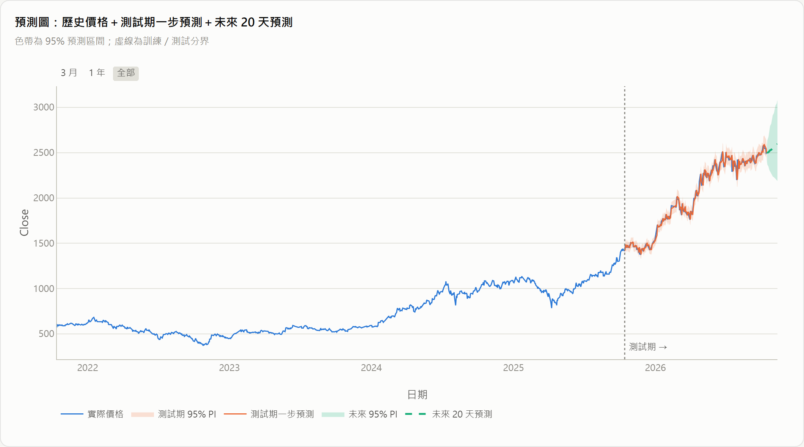

線性回歸預測平台：一個網頁、兩種問題、資料來源隨你換
表格資料：Kaggle Predict the Flood（20 個特徵）、50_Startups 等。4 種特徵選擇＋交叉驗證，測試 R² 0.843。
時間序列：用前 p 天的收盤價預測明天，AIC／BIC 選 p，附信賴區間與預測區間，並往後預測 20 天。
預測下一交易日收盤價；成功標準：贏過 Naive、PI 涵蓋率約 95%
1,213 個交易日；573 → 2,490 元；PACF 在 lag 1 截斷
日期排序、log 轉換、落後特徵、依時間切分 970／243 天
特徵選擇＝選 p：AIC、BIC 都選 p = 1；φ₁ = 1.0006
RMSE 41.76 vs 41.91；Ljung-Box p = 0.19（殘差為白噪音）
Vercel＋GitHub Pages；未來 20 日預測＋95% PI，可下載 CSV

log 價格 ≈ 昨天的值 + 隨機誤差。AR 模型的 RMSE 只比「明天 = 今天」低 0.35%，與效率市場假說一致。
測試期股價從 1,425 漲到 2,490 元，波動金額變大；改用 log 後誤差以百分比計，涵蓋率接近 95%。